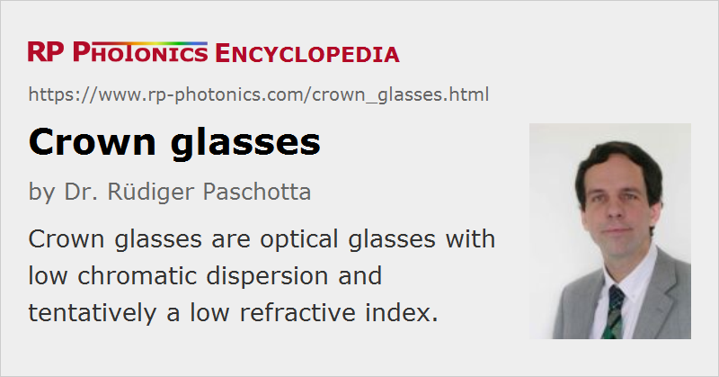

Crown Glasses
Definition: optical glasses with low chromatic dispersion and tentatively a low refractive index
More general terms: optical glasses
German: Krongläser
How to cite the article; suggest additional literature
Author: Dr. Rüdiger Paschotta
Crown glasses are optical glasses with an Abbe number above 55 or above 50 – there is no general agreement on that limit. A high Abbe number indicates weak chromatic dispersion and tentatively a low refractive index, but not always lower than for flint glasses.
The term crown glass does not imply a certain chemical composition. Tentatively, crown glasses contain lower amounts of heavy metals (e.g. lead, zinc or barium) than flint glasses, and a correspondingly higher content of alkali metals like sodium and potassium. Often they are soda–lime glasses (silicate glasses) or phosphate glasses. Their mass density is comparatively low.
Crown glasses have a larger band gap energy than flint glasses, leading to a shorter-wavelength UV absorption edge. Their parasitic absorption and scattering losses can be fairly low.
Names of Crown Glasses
The common system of names for glass types uses a combination of one or more letters with a number. The letters indicate the general type of glass, e.g. 'K' for crown (german Kron). There are various more closely specified crown glass types, see the following table:
| Abbrev. | German name | English name |
|---|---|---|
| K | Kron | crown |
| SK | Schwerkron | heavy crown |
| SSK | Schwerstkron | extra heavy crown |
| BK | Bor-Kron | boron crown |
| FK | Fluor-Kron | fluor crown |
| PK | Phosphat-Kron | phosphate crown |
| PSK | Phosphat-Schwerkron | phosphate heavy crown |
| FPSK | Fluorphosphat-Schwerkron | fluorophosphate heavy crown |
| LaK | Lanthan-Kron | lanthanum crown |
| LaSK | Lanthan-Schwerkron | lanthanun heavy crown |
| BaK | Barit-Kron | barium crown |
| KF | Kronflint | crown flint |
A particularly often used crown glass is BK7, a borosilicate glass, having a refractive index 1.5168 at 587.6 nm and the Abbe number 64.17.
Lead-free alternative glass versions with quite similar optical properties are indicated with “N-” in front. For example, N-BK7 is a lead-free version of the traditional BK7.
Application of Crown Glasses
Many optical components such as lenses, mirror substrates, optical windows and prisms are made from crown glasses. Important aspects for the choice of such glasses can be low parasitic propagation losses (e.g. for high-power laser applications), high near-UV transmission and low losses due to Fresnel reflections (if those are not suppressed with anti-reflection coatings). Low-dispersion glasses are e.g. beneficial for imaging applications, because they minimize problems with chromatic aberrations.
Combinations of crown and flint glasses are used for achromatic optics.
Note that despite the low mass density of crown glasses, light-weight optics (e.g. correction glasses) often need to be made from flint glasses, where e.g. lenses can be made with a lower thickness for a given focal length.
Window glasses are also usually crown glasses.
Questions and Comments from Users
Here you can submit questions and comments. As far as they get accepted by the author, they will appear above this paragraph together with the author’s answer. The author will decide on acceptance based on certain criteria. Essentially, the issue must be of sufficiently broad interest.
Please do not enter personal data here; we would otherwise delete it soon. (See also our privacy declaration.) If you wish to receive personal feedback or consultancy from the author, please contact him e.g. via e-mail.
By submitting the information, you give your consent to the potential publication of your inputs on our website according to our rules. (If you later retract your consent, we will delete those inputs.) As your inputs are first reviewed by the author, they may be published with some delay.
See also: optical glasses, flint glasses, Abbe number, refractive index
and other articles in the category optical materials
|  |
If you like this page, please share the link with your friends and colleagues, e.g. via social media:
These sharing buttons are implemented in a privacy-friendly way!